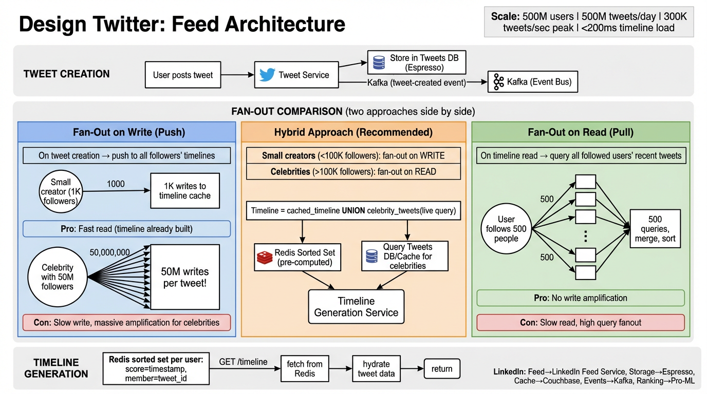

A deep dive into the architecture of a global microblogging platform — fan-out strategies, timeline generation, real-time search, trending topics, and the celebrity problem.
Twitter is a global microblogging platform where users post short messages (tweets), follow other users, and consume a personalized timeline. The core challenge is delivering a real-time, ranked feed to hundreds of millions of users while ingesting an enormous write load.
| Metric | Calculation | Result |
|---|---|---|
| Tweet writes/sec (avg) | 500M / 86,400 | ~5,800 writes/sec |
| Tweet writes/sec (peak) | ~50x average burst | ~300,000 writes/sec |
| Timeline reads/sec | 500M users × 5 opens/day / 86,400 | ~29,000 reads/sec |
| Read:Write ratio | Timeline reads dominate | ~1000:1 |
| Tweet storage/day | 500M × 300 bytes avg | ~150 GB/day |
| Media storage/day | ~20% tweets have media, 1MB avg | ~100 TB/day |
| Fan-out operations/sec | 5,800 tweets × 200 avg followers | ~1.16M fan-out ops/sec |
The central architectural challenge of Twitter is the fan-out problem: when a user tweets, that tweet must appear in the timeline of every follower. With some users having 100M+ followers, naive approaches break down. There are three fundamental strategies.

When a user posts a tweet, the system immediately pushes the tweet ID into the timeline cache (Redis sorted set) of every follower. The timeline is pre-computed at write time.
tweet_id (Snowflake ID).follows table to retrieve the list of all follower IDs for the author.ZADD timeline:{user_id} {timestamp} {tweet_id} in Redis, inserting the tweet into every follower's pre-computed timeline.ZREVRANGE timeline:{user_id} 0 49 to get the latest 50 tweet IDs, already sorted. Extremely fast: O(log N + K).No pre-computation at write time. When a user opens their timeline, the system fetches tweets at read time by querying the followed users' tweet lists and merging them.
author_id. No fan-out happens.following list (e.g., 500 users).Twitter uses a hybrid approach: Fan-Out on Write for regular users, Fan-Out on Read for celebrities. A user is classified as a "celebrity" if their follower count exceeds a threshold (e.g., > 500K followers).
celebrity_tweets cache indexed by author.| Approach | Write Cost | Read Cost | Best For |
|---|---|---|---|
| Fan-Out on Write | O(followers) | O(1) | Users with < 500K followers |
| Fan-Out on Read | O(1) | O(following) | Celebrity accounts |
| Hybrid | Mixed | O(1) + O(celeb_following) | Production Twitter |
Consider a celebrity with 50 million followers who tweets. Under pure fan-out on write:
ZADD operations must completeThe home timeline is the core product surface. It must feel instant, be personalized, and reflect near-real-time activity. The architecture combines pre-computed caches, a hydration pipeline, and cursor-based pagination.
Each user's timeline is stored as a Redis Sorted Set keyed by timeline:{user_id}. The score is the tweet's Snowflake timestamp, and the member is the tweet_id.
Key: timeline:12345 Type: Sorted Set (ZSET) Score (timestamp) Member (tweet_id) ─────────────────── ───────────────── 1712345678901 tweet_98765 1712345679234 tweet_98770 1712345680100 tweet_98773 1712345681456 tweet_98780 ... Commands: ZADD timeline:12345 1712345681456 tweet_98780 # Insert tweet ZREVRANGE timeline:12345 0 49 # Get latest 50 ZREMRANGEBYRANK timeline:12345 0 -801 # Trim to 800 max ZCARD timeline:12345 # Count entries
ZREMRANGEBYRANK keeps the set bounded (e.g., max 800 entries), preventing unbounded memory growth.The timeline cache stores only tweet_ids for compactness. Before returning to the client, those IDs must be hydrated into full tweet objects with author info and media URLs.
Timeline Cache (Redis)
│
▼
[tweet_id_1, tweet_id_2, ..., tweet_id_50]
│
├──▶ Tweet Service ──▶ { text, created_at, media_ids, author_id, ... }
│ (batch GET from Tweets table / cache)
│
├──▶ User Service ──▶ { username, display_name, avatar_url, verified }
│ (batch GET from Users table / cache)
│
└──▶ Media Service ──▶ { image_url, video_url, thumbnail }
(resolve media_ids to CDN URLs)
│
▼
Merge & return hydrated timeline JSON to client
ZREVRANGE timeline:{user_id} 0 49 returns the latest 50 tweet IDs.author_ids, multiget against User Service. Returns display names, avatars, verification badges.media_ids, resolve to CDN URLs via Media Service. Images are served from edge CDN.Cache-Control for short-lived client-side caching (e.g., 30s).Offset pagination (LIMIT 50 OFFSET 100) breaks in real-time feeds because new tweets shift the offset window, causing duplicates or missed tweets. Cursor-based pagination uses a stable reference point.
GET /api/timeline?count=50
Response: { tweets: [...], next_cursor: "1712345678901" }
GET /api/timeline?count=50&cursor=1712345678901
→ ZREVRANGEBYSCORE timeline:{uid} (1712345678901 +inf 0 49
Response: { tweets: [...], next_cursor: "1712345670500" }
# Cursor = Snowflake timestamp of the LAST tweet in previous page
# Each page fetches tweets OLDER than the cursor
# Immune to new tweets arriving between page loads
ZREVRANGEBYSCORE with score boundaries is O(log N + K).Twitter Search and Trending Topics are two distinct but interconnected systems. Search requires a full-text inverted index over hundreds of billions of tweets, while trending requires real-time stream processing to detect velocity spikes in hashtags and keywords.
Every tweet is tokenized and indexed into an inverted index that maps terms (words, hashtags, mentions) to lists of tweet IDs. This enables sub-second full-text search across the entire tweet corpus.
Inverted Index Structure: ───────────────────────── Term → Posting List (sorted by timestamp desc) ───────────────────────── #worldcup → [tweet_999, tweet_987, tweet_950, tweet_912, ...] #breakingnews → [tweet_998, tweet_975, tweet_960, ...] "earthquake" → [tweet_997, tweet_990, tweet_985, ...] @elonmusk → [tweet_996, tweet_980, ...] Query: "#worldcup goal" 1. Fetch posting list for #worldcup 2. Fetch posting list for "goal" 3. Intersect lists (AND) or union (OR) depending on query type 4. Rank by recency + engagement score 5. Return top K results
#WorldCup is indexed as-is (case-normalized) for exact hashtag search.Trending isn't about absolute volume — it's about velocity. A hashtag that goes from 100 to 10,000 tweets in 5 minutes is trending, even if another hashtag has 50,000 steady tweets. The system detects anomalous acceleration.
velocity = count(current_window) / count(previous_window). A velocity > threshold (e.g., 5x) flags the term as trending.
┌─────────────────────────────────────────────────┐
│ Count-Min Sketch (width W × depth D) │
│ │
│ h1("earthquake") → slot 42 → counter++ │
│ h2("earthquake") → slot 17 → counter++ │
│ h3("earthquake") → slot 89 → counter++ │
│ │
│ Estimate = min(h1[42], h2[17], h3[89]) │
│ │
│ Properties: │
│ • Never underestimates (may overestimate) │
│ • Fixed memory: W × D counters (e.g., 10MB) │
│ • Works for millions of unique terms │
│ • Error rate ≤ ε with probability 1 − δ │
│ (W = ⌈e/ε⌉, D = ⌈ln(1/δ)⌉) │
└─────────────────────────────────────────────────┘
Raw search results from the inverted index are ranked using a multi-signal scoring model:
| Signal | Weight | Description |
|---|---|---|
| Recency | High | Newer tweets score higher; exponential decay over time |
| Engagement | High | Likes, retweets, replies boost relevance |
| Author authority | Medium | Verified accounts, follower count, account age |
| Text relevance | Medium | TF-IDF score of query terms in tweet text |
| Social proximity | Medium | Tweets from users you follow or interact with rank higher |
| Media presence | Low | Tweets with images/videos may get slight boost |
| Spam score | Negative | ML model penalizes spammy/low-quality tweets |
The data model balances between relational integrity (users, follows) and high-throughput NoSQL access (tweets, timelines). In practice, Twitter uses a mix of MySQL (for social graph), Manhattan/Gizzard (for tweets), and Redis (for timelines).
| Column | Type | Notes |
|---|---|---|
user_id | BIGINT (PK) | Snowflake ID, globally unique |
username | VARCHAR(15) | Unique handle, indexed |
display_name | VARCHAR(50) | User's display name |
email | VARCHAR(255) | Unique, hashed for lookup |
bio | VARCHAR(160) | Profile bio text |
avatar_url | VARCHAR(512) | CDN URL to profile image |
follower_count | INT | Denormalized counter |
following_count | INT | Denormalized counter |
is_verified | BOOLEAN | Verified badge status |
is_celebrity | BOOLEAN | Fan-out threshold flag (>500K followers) |
created_at | TIMESTAMP | Account creation time |
| Column | Type | Notes |
|---|---|---|
tweet_id | BIGINT (PK) | Snowflake ID, encodes timestamp + worker + sequence |
author_id | BIGINT (FK) | References users.user_id, sharding key |
text | VARCHAR(280) | Tweet content |
media_ids | JSON | Array of media attachment IDs |
reply_to_id | BIGINT | NULL if not a reply; parent tweet_id otherwise |
retweet_of_id | BIGINT | NULL if original; source tweet_id for retweets |
like_count | INT | Denormalized, updated async |
retweet_count | INT | Denormalized, updated async |
reply_count | INT | Denormalized, updated async |
created_at | TIMESTAMP | Extracted from Snowflake ID |
Indexes: (author_id, created_at DESC) for user profile timeline, (tweet_id) for direct lookup.
| Column | Type | Notes |
|---|---|---|
follower_id | BIGINT | The user who follows |
followee_id | BIGINT | The user being followed |
created_at | TIMESTAMP | When the follow happened |
Composite PK: (follower_id, followee_id). Indexes: (followee_id) for "who follows me" queries (fan-out lookup), (follower_id) for "who do I follow" queries.
| Column | Type | Notes |
|---|---|---|
user_id | BIGINT | User who liked |
tweet_id | BIGINT | Tweet that was liked |
created_at | TIMESTAMP | When the like happened |
Composite PK: (user_id, tweet_id). Prevents double-likes. Index on (tweet_id) for "who liked this tweet" queries.
| Key | Type | Contents | TTL |
|---|---|---|---|
timeline:{user_id} | Sorted Set | tweet_ids scored by timestamp | No TTL (trimmed to 800) |
tweet:{tweet_id} | Hash | Cached tweet object for hydration | 24 hours |
user:{user_id} | Hash | Cached user profile for hydration | 1 hour |
celeb_tweets:{user_id} | Sorted Set | Latest tweets from celebrity users | 7 days |
Many of Twitter's architectural patterns map directly to components in the LinkedIn tech stack. Understanding these parallels demonstrates depth in system design interviews.
| Twitter Component | LinkedIn Equivalent | Role |
|---|---|---|
| Home Timeline / Feed | Feed Service | LinkedIn's Feed Service generates the main feed using a hybrid push/pull model similar to Twitter's approach |
| Tweets Table (Manhattan) | Espresso | LinkedIn's document store for user-generated content, partitioned by member ID, supports secondary indexes |
| Timeline Cache (Redis) | Couchbase | Distributed cache for feed materialization and timeline data; replaced Voldemort for many use cases |
| Fan-Out Queue (Kafka) | Kafka | Kafka was invented at LinkedIn. Used for all async event processing including feed fan-out, metrics, and change data capture |
| Feed Ranking ML | Pro-ML | LinkedIn's ML platform for feed ranking, combining engagement prediction, relevance scoring, and diversity optimization |
| Stream Processing (Heron) | Samza | LinkedIn's stream processing framework (built on Kafka) for real-time feed updates, trending, and notifications |
| REST API Layer | Rest.li | LinkedIn's RESTful framework for service-to-service communication with schema evolution support via Pegasus |
| Social Graph (FlockDB) | Social Graph Service | LinkedIn's graph service managing 1st/2nd/3rd degree connections, used for "People You May Know" and feed personalization |
| Search (Earlybird) | Galene | LinkedIn's search engine built on Lucene, powering people search, job search, and content search with real-time indexing |
Q: How would you design the tweet delivery system? Why not use a single approach?
A: The key insight is that no single approach works for all users. Fan-out on write gives O(1) read latency for regular users but breaks for celebrities with millions of followers (write amplification). Fan-out on read avoids write amplification but is too slow for the read-heavy workload (1000:1 ratio). The hybrid approach classifies users by follower count: regular users (<500K followers) use push, celebrities use pull. At read time, merge the pre-computed timeline with a small number of celebrity tweet fetches. This keeps timeline load under 200ms while bounding write amplification.
Q: What happens when a celebrity with 50M followers tweets during the Super Bowl?
A: Under pure fan-out on write, this single tweet triggers 50M Redis writes, taking 8+ minutes and saturating the fan-out pipeline. Meanwhile, other users' tweets queue behind it. The hybrid model solves this: the celebrity tweet is stored once and fetched at read time. Additionally, implement rate limiting on the fan-out pipeline, priority queues (celebrity tweets get lower fan-out priority), and circuit breakers that automatically switch high-traffic accounts to pull mode. For burst events like the Super Bowl, pre-warm caches and scale the read-path infrastructure horizontally.
Q: How do tweets become searchable within seconds of posting?
A: Twitter's Earlybird uses an in-memory inverted index optimized for write-heavy workloads. New tweets are tokenized and indexed into the in-memory segment within seconds (not minutes like batch-indexed systems). The index is sharded by tweet ID and uses a scatter-gather pattern: a query is broadcast to all shards, each returns its top-K matches, and a root node merges results. For hashtag trending detection, a parallel stream processing pipeline (Count-Min Sketch with sliding windows) identifies velocity spikes. At LinkedIn, Galene serves a similar role with near-real-time indexing, while Samza handles the streaming analytics equivalent of Twitter's trending pipeline.
Q: A user posts a tweet and immediately checks their profile. The tweet isn't there yet. How do you handle this?
A: This is the read-after-write consistency problem. Solutions: (1) For the author's own timeline, read from the primary database (not the cache) for a short window after posting. (2) Remember the timestamp of the user's last write in a client-side cookie; if the cached timeline is older, bypass cache and read from the primary. (3) Use async_write_ack: the API returns success only after the tweet is confirmed in the primary store, but fan-out is still async. (4) For the author's profile page specifically, always include a "your recent tweets" section that reads directly from the Tweets table with a WHERE author_id = ? query.
Q: How does Twitter generate globally unique, time-ordered IDs at 300K tweets/sec?
A: Twitter's Snowflake generates 64-bit IDs composed of: timestamp (41 bits, ~69 years), datacenter ID (5 bits), worker ID (5 bits), and sequence number (12 bits, 4096 per ms per worker). This gives time-ordering without coordination between ID generators. Each worker generates IDs independently, avoiding a single point of failure. The timestamp prefix enables efficient range queries (WHERE tweet_id > ? is equivalent to WHERE created_at > ?) and enables cursor-based pagination using the tweet_id directly as the cursor.